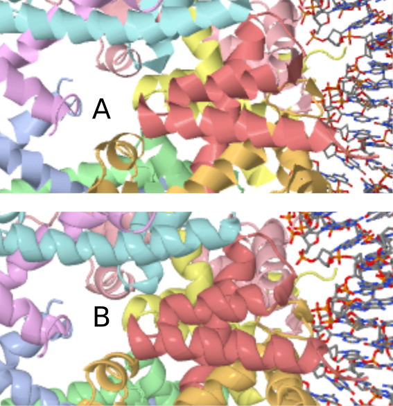
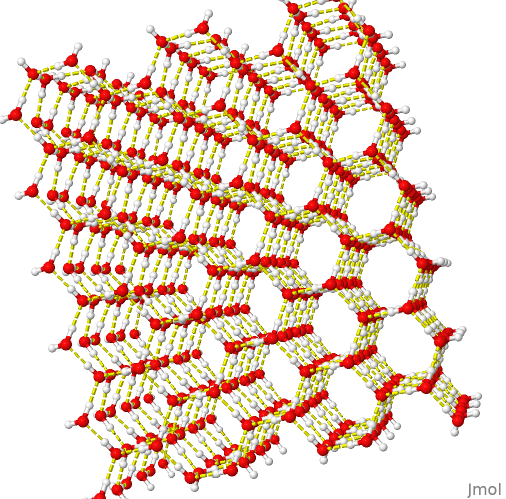
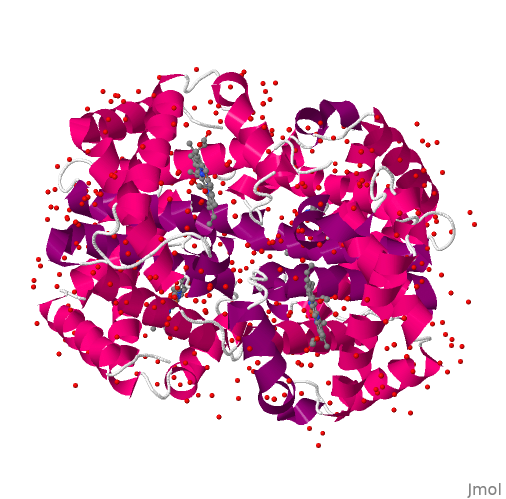

2 Água
2.1 Estrutura e interações
Estando com acesso à internete, vá em File, Get mol, e digite water. Alternativamente, vá ao repositório de imagens e procure por h2o. Abra o arquivo no Jmol ou, mais simples ainda, arraste-o com o mouse e solte-o na janela gráfica do Jmol. E voilá ! A imagem aparece no Jmol, mas com a vantagem de ser manipulável por este.
Esse arquivo de imagem, bem como os demais listados ao longo deste material, são confiados em diretório próprio para estudo de Bioquímica Estrutural, e podem ser exportados com o botão direito do mouse em File, Export, Export PNG+Jmol image. Portable Networks Graphics-PNG consiste em formatação de imagem com compressão de qualidade superior ao GIF (Graphic Interchange Format), também possui 24-bit para cores, e é ideal para internete.
Arquivos salvos dessa forma pelo Jmol podem ser duplamente visualizados num editor de imagens comum ou no próprio Jmol. Nesse caso, preservando-se a formatação de renderização, tamanho, etiquetas, plano de fundo, estilos e cores previamente definidos para a imagem. Apesar do Jmol não exportar imagens com qualidade vetorial para publicação (ex: PS-Post Script, EPS-Encapsulated Post Script, PDF-Portable Document Format nativo), existe um formato que melhora a imagem final da estrutura, POV-ray.
Nesse caso, é necessário instalar o programa POV-ray para conversão do arquivo exportado em File->Export->Export POV-ray image. POV-ray constitui um programa multiplataforma e de livre distribuição que possibilita a renderização de imagens com tridimensionalidade (ray tracing). Como exemplo, vide a Figura abaixo para comparação de um arquivo de imagem de um complexo nucleoproteico exportado como PNG e o mesmo arquivo, como POV-ray, ambos em ampliação de 459x.

Voltando à mólécula de água previamente carregada, rotacione-a com o mouse. Aumente e reduza o tamanho da molécula com o mouse (botão do meio ou Shift+botão direito). Retornando à molécula de água como primeiro exemplo, devolva seu tamanho original escrevendo no Console zoom 0. Se quiser, desloque a molécula na horizontal - Ctrl+botão esquerdo, ou rotacione a molécula com Shift+botão direito.
2.1.1 Sober o Console
Aprenda agora a usar a riqueza de comandos do Console. Ele nada mais é do que um ambiente para execução de linhas de comando e mesmo programação do Jmol, e que possibilita uma ampla gama de ações sobre a molécula em estudo, flexibilizando imensamente o que pode ser obtido por acesso de Menu. Para acessar o Console, vá em File –> Console. Simples ! Você pode digitar os comandos listados, ou copiá-los e colá-los no prompt do Console
De volta à molécula de água, centralize-a na tela - digite center. Devolva seu tamanho original com zoom 0. Represente-a com renderização distinta, como:
+ arame, somente - wireframe only
+ aumento da espessura: wireframe 50
+ preechimento adicional - spacefill
Observe que a representação anterior foi sobreposta à atual (está lá, mas não é vista). Experimente visualizá-las em conjunto com: color translucent
+ Mude o plano de fundo: background lightyellow
+ Etiquete a carga parcial dos átomos: calculate partialcharge; label %P
No Jmol, comandos sequenciais podem ser separados por ";"
+ Experimente a renderização de superfícies:
- van der Waals: - dots on
- potencial eletrostático:
- potencial eletrostático: isosurface resolution 6 molecular map mep (ou pelo Menu --> Surfaces)
- Varie o número e observe a resolução (1 a 6). | Exemplificando, a imagem abaixo contém o resultado de potencial eletrostático experimentado acima.

Você também pode visualizar a superfície eletrostática da molécula no plano, digitando, por exemplo:
isosurface resolution 6 contour 41 plane xy map mep
2.1.2 Água e ligações de hidrogênio
Agora experimente com três moléculas de água. Carregue o arquivo “h2o-3.png” contido na página do repositório de imagens. Observe a ligação de hidrogênio:
calculate hbonds; hbonds 0.1 # o último comando opcional, para espessura)
color hbonds magenta # mudança de cor da ligações HVeja que o Jmol mostra uma ligação de H apenas, embora haja três moléculas de água disponíveis na imagem. Por que a molécula à esquerda não parece formar uma ligação H com outra das restantes ?
Para auxiliar-lhe na resposta, meça a distância formada na ligação de H exibida. Para tanto, selecione o átomo doador de H (esfera branca, representação CPK para o hidrogênio) com um duplo clique e arraste o ponteiro do mouse ao átomo aceptor da ligação de H. Anote a distância, em torno de 0,2 nm ou 2 Angstrons. Essa é a distância aproximada para uma ligação de H típica (2-4 Angstrons).
Agora repita essa ação, mas com a molécula de água distante. Essa distância permitiria a formação de uma ligação de H ?
Veja agora como as ligações de hidrogênio se apresentam numa estrutura hídrica mais complexa, carregando o arquivo “h2o-tot”. Visualize as ligações de H como anteriormente, e gire a molécula.

2.2 Biomoléculas e água
Como pode-se esperar das observações acima, a água interage fortemente com as biomoléculas por ligações de H. Por vezes, e como será visto ao longo deste material, a água permanece nos cristais cristalografados de proteínas, podendo também desempenhar um papel molecular na catálise de reações e interações com ligantes.
Para exemplificar isso, carregue o arquivo “hemogl.png”. Trata-se da proteína transportadora de oxigênio, hemoglobina. Digite:
select protein; spacefill; color greyAgora gire a estrutura e perceba quantas moléculas de água (em vermelho, representado pelo oxigênio) se encontram fortemente adsorvidas ao cristal da proteína, afetando seu padrão de difração de raios-X.
